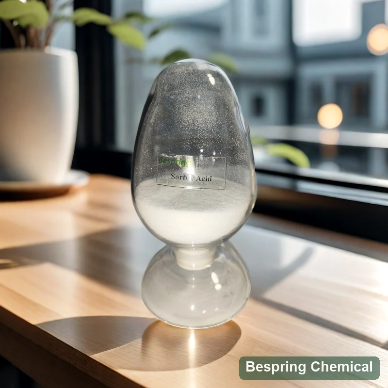
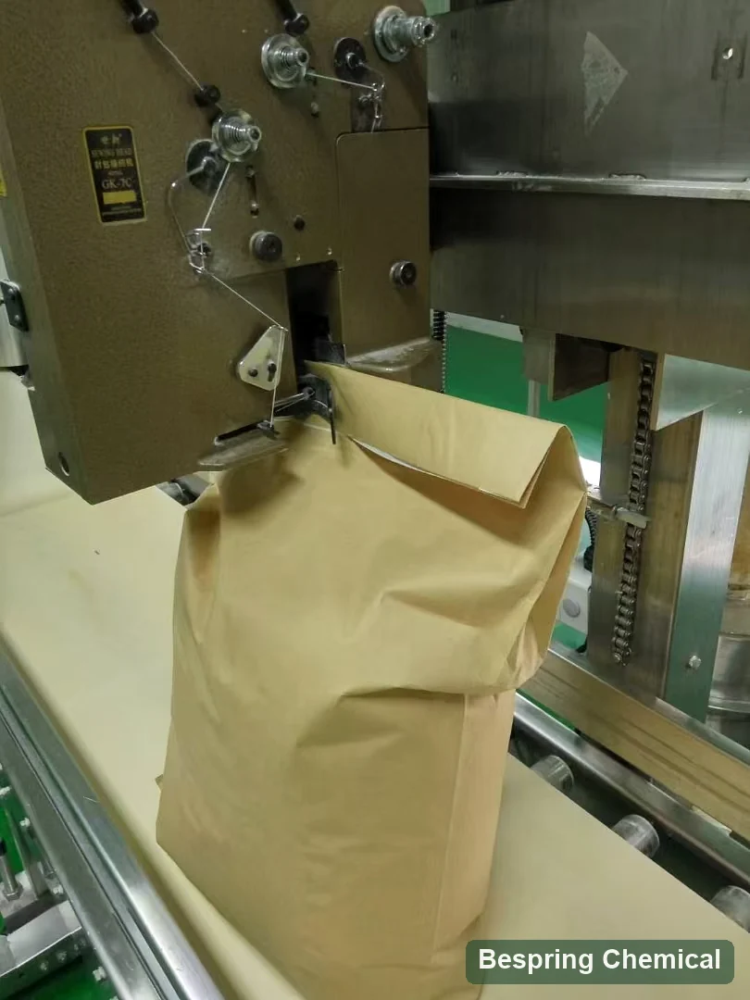

Define the food and market
Provide the food category, pH, target organisms, shelf life, quantity and destination.
Food preservative · Sorbic acid (SA) · E200 / INS 200
Food grade sorbic acid (E200 / INS 200) is the free-acid preservative evaluated primarily for mould and yeast control in permitted foods. Bespring supplies ingredients for international B2B buyers. Confirm the required food standard, particle form, final pH and addition process before selecting a grade or requesting a bulk quote.
Share the exact grade, application, quantity, packing, destination and required documents.

Direct product answer
Sorbic acid, also called 2,4-hexadienoic acid, is a single preservative substance: CAS 110-44-1, formula C6H8O2, INS 200 and E200. The JECFA sorbic acid monograph gives a formula weight of 112.12 g/mol and describes colourless needles or white free-flowing powder. It is slightly soluble in water and soluble in ethanol.
This page covers food grade free sorbic acid, rather than potassium sorbate or a coated preparation. Agree the offered-grade specification and its methods before purchase; a batch COA then reports that lot's results. Preservative identity and ingredient purity do not establish finished-food shelf life.
Procurement checklist
Compare the offered grade, application requirements and commercial terms before requesting a sample or placing an order.
Provide the food category, pH, target organisms, shelf life, quantity and destination.
Request identity, assay method, particle needs, impurities, microbiology and batch documentation.
Evaluate dough or batter effects, taste, distribution, packaging and real shelf life.
Compare potassium sorbate E202 when aqueous addition matters. The salt has a different molecular weight and composition; compare active sorbic-acid basis and market rules rather than assuming equal-mass substitution.
Application screening
These are formulation screening areas, not universal approvals, dosage recommendations or guaranteed outcomes. Confirm legal use and technical performance in the finished food.
Evaluate mould control alongside dough and finished-food pH, water activity, fermentation, bake profile and packaging. Check baker's yeast compatibility before direct dough addition (yeast-growth research); a specialised or coated grade requires its own release and proofing trials.
Distinguish surface treatment from bulk addition. Verify dispersion, permitted use, culture compatibility, flavour and packaging in the selected cheese or dairy product.
Test dispersion and preservative distribution through the water and fat phases. Assess equilibrium pH, processing, package conditions and after-opening exposure in the actual sauce or dressing.
Confirm particle-size distribution, segregation risk, blend uniformity and active sorbic-acid assay. Carrier-containing or coated preparations need a separate composition and label review.
Technical selection
pH affects the equilibrium between undissociated acid and sorbate ions, but organism and food conditions also matter. Primary research on sorbic acid and pH found contributions from both forms under its test conditions; it does not establish a universal food dose or bacterial-control claim.
Sorbic acid is only slightly soluble in water. Agree particle form, mixing and addition point, then verify dissolution or dispersion at the actual temperature and concentration. Do not assume a clear aqueous solution or guaranteed uniform distribution.
Plan finished-food trials against the relevant spoilage yeasts and moulds. Record pH, water activity, process hygiene, microbial results, sensory quality and final-package conditions over the intended storage period.
Confirm the food category, authorised function, maximum level, counting basis and label in each market. Do not treat an acceptable daily intake expressed per kilogram body weight as a food addition rate.
Private technical documentation
The offered-grade commercial specification is provided through sales. State the required standard and edition, impurity limits and physical-form requirements. Use the checklist below to compare methods as well as values; public standard criteria are not a Bespring product guarantee or a batch COA.
On small screens, swipe the table; keyboard users can focus it and use the arrow keys.
| Control | Confirm with the offered grade | Why it matters |
|---|---|---|
| Identity and form | Sorbic acid E200 / INS 200, CAS 110-44-1; particle distribution and appearance | Distinguish free acid from sorbate salts and coated blends |
| Assay | Acceptance range, method and as-is / dry / anhydrous reporting basis | Compare active content on the agreed basis |
| Water and residue | Water method; sulfated-ash method and sample preparation | Karl Fischer water is not interchangeable with loss on drying |
| Purity panel | Separate Pb, As, Hg and Zn limits, results and reporting limits; aldehyde method | A legacy heavy-metals total is not an element-specific result |
| Process properties | Melting-range method, dissolution/dispersion conditions and heat-colour criterion | Match tests to mixing, food process and the named standard |
| Documents and supply | Specification/TDS, SDS, representative and batch COA; source declarations; packing and storage | Verify revision, lot, certificate scope and actual commercial terms |
Request the current signed specification or TDS, SDS, analytical methods, representative COA and batch COA.
Verify applicable food-safety, quality, origin, allergen, Kosher, Halal and site certificates for the exact grade and source.
Review the FAO/WHO JECFA sorbic acid record, then apply current destination-market rules to the exact finished food.
Compliance note: U.S. 21 CFR 182.3089 lists sorbic acid as GRAS when used according to GMP. This is a condition of use, not an FDA approval of a supplier or batch. Check applicable food standards and destination rules separately.
JECFA reference: assay ≥99.0% on anhydrous basis, water ≤0.5% by Karl Fischer, sulfated ash ≤0.2%, aldehydes ≤0.1% as formaldehyde and lead ≤2 mg/kg. Its melting range is 132–135°C with the stated apparatus preparation. These criteria apply to sorbic acid; verify the complete methods in the original monograph.
EU impurity limits differ: Regulation (EU) 2024/2597, Annex II sets arsenic, lead and zinc at ≤0.1 mg/kg each, and mercury at ≤0.01 mg/kg for E200; those purity changes apply from 27 April 2025, subject to its transition provisions. A JECFA lead limit or an older COA does not establish conformity with these lower EU limits. Request element-specific results with reporting limits adequate for the required specification, and review the current consolidated rules.
Storage and handling
Packaging process reference

Buyer questions
Sorbic acid is the free acid, E200 / INS 200; potassium sorbate is its potassium salt, E202 / INS 202. The salt is more water-soluble and has a different molecular weight. Compare formulation pH, addition route, active sorbic-acid basis and market conditions rather than replacing them gram for gram.
It requires a proofing and preservation trial. Sorbic acid can affect yeast growth, and ordinary powder does not establish the release behaviour of a specialised or coated grade. Compare addition sequence, dough pH, fermentation, bake profile and finished-package shelf life before approval.
JECFA describes it as slightly soluble in water. Concentration, temperature, particle size and mixing affect dissolution and distribution. Evaluate the actual formula and consider a suitable salt or addition route where needed; do not assume equal-dose substitution.
No. Confirm destination-market food categories, conditions and label requirements. Validate relevant organisms, pH, water activity, processing, hygiene and final packaging. Ingredient assay alone does not establish a finished-food shelf life or universal pathogen control.
Agree the current offered-grade limits, complete methods and reporting bases, then compare lot-specific results. Distinguish water from loss on drying and an element-specific lead result from heavy metals as Pb. For EU supply, review the lower As, Pb, Hg and Zn limits introduced by Regulation (EU) 2024/2597; older certificates may lack adequate reporting limits.
Provide the food standard and edition, application, final pH and water activity where known, addition/process route, particle requirements, critical tests, quantity, packaging, destination, Incoterm and delivery timing. Request the offered-grade specification or TDS, SDS, representative and batch COA, and required declarations or certificates; confirm availability and scope.
Content updated 5 October 2026 · Technical references: FAO/WHO JECFA, U.S. eCFR and the EU E200 amendment.
Related sourcing
Browse the full portfolio and available technical product dossiers.
Discuss the current specification, document availability, sample requirements and commercial terms.
Review sourcing and export support for international ingredient procurement.
For preservative selection, compare water-soluble potassium sorbate, encapsulated sorbic acid for release-controlled bakery trials and calcium propionate for bakery mould-control screening. These are different ingredients or preparations, not equal-dose replacements. The food ingredient application guide connects preservation requirements with other formulation functions.
Specification-led sourcing
Share the food standard, application, final pH, water activity where known, addition point and target spoilage organisms. Include particle requirements, critical purity tests, quantity, packaging, destination, Incoterm and delivery needs so the offered grade can be reviewed.